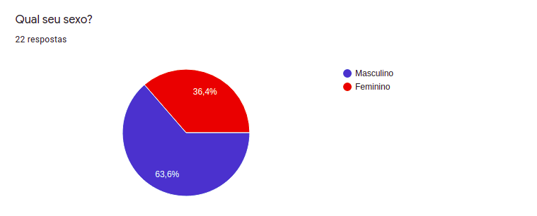
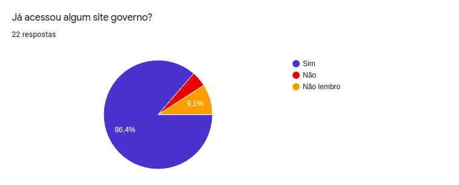
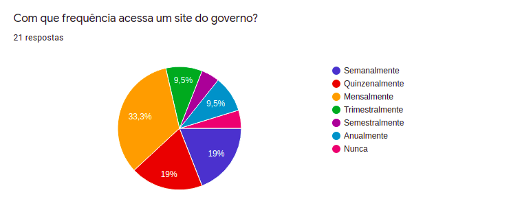
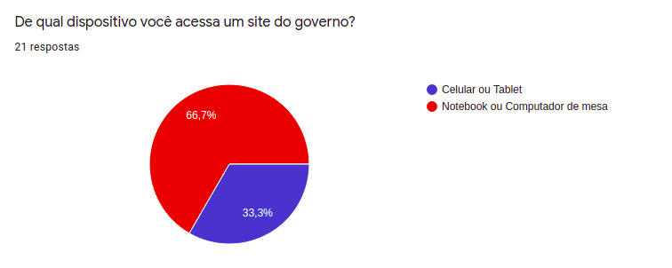
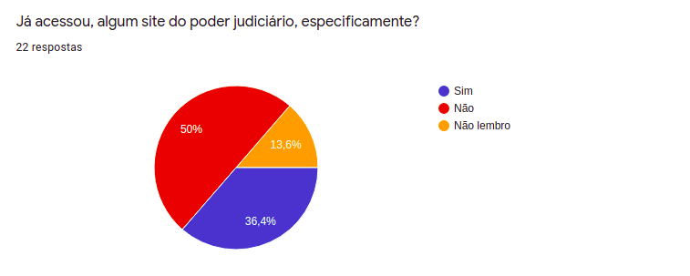
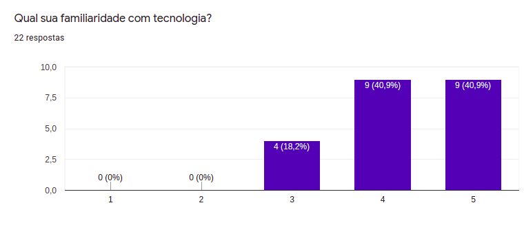
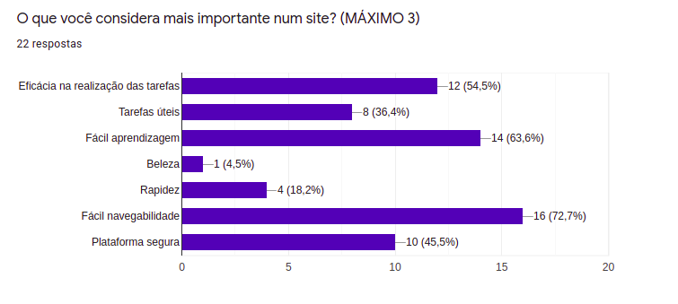

Perfil do Usuário
Introdução
Para um estudo e análise de uma aplicação se é necessário conhecer aqueles que a usam, esse documento tem como objetivo um melhor entendimento do usuário do site. Através do uso de questionários é possível levantar dados, traçar um perfil daqueles que usam o programa e, consequentemente, fazer uma avaliação do site de forma mais direta, completa e efetiva.
Metodologia
Questionário
Para atingir um resultado satisfatório de informações, optamos por aplicar um questionário on-line. Através dele, conseguimos atingir um grande número de pessoas em um curto espaço de tempo, assim, capturando uma interessante base de dados que constituem o perfil de usuário da aplicação.
Fizemos ao todo, 10 questões ao nosso usuário:
- Qual seu sexo?
- Qual sua idade?
- Qual seu nível de escolaridade?
- Já acessou algum site do governo?
- Com que frequência acessa um site do governo?
- De qual dispositivo você acessa um site do governo?
- Qual o motivo para acessar um site do governo?
- Já acessou algum site do poder judiciário, especificamente?
- Qual sua familiaridade com tecnologia?
- O que você considera mais importante num site?
Resultados
Questionário










Conclusão
Com base nos dados coletados, pode-se definir o perfil de usuário que utiliza o site Tribunal de Justiça do Estado do Amapá como adultos de diferentes idades que buscam fazer ações para resolver suas questões pessoais:
- Os usuário são, em sua maioria, do sexo masculino;
- A faixa etária dos usuários é bem diversificada, em sua maioria, gira em torno dos 25 aos 35 anos;
- O nível de escolaridade dos usuário é alto, em sua grande maioria, com ensino superior incompleto e completo;
- O usuário acessa o site, em sua maioria, com uma frequência mensal;
- O usuário acessa o site, em sua maioria, via notebook e/ou computador de mesa;
- O usuário acessa o site, em sua maioria, por questões pessoais e particulares;
- O nível de familiaridade do usuário com tecnologia é diversificado, mas em média, alto;
- O usuário considera a eficácia na realização das tarefas, a fácil aprendizagem e a fácil navegabilidade como as coisas mais importantes em um site.
Todos os dados coletados pode ser encontrados aqui.
Bibliografia
BARBOSA, Simone. SILVA Bruno. "Interação Humano-Computador"
Versionamento
| Versão | Data | Modificação | Autor |
|---|---|---|---|
| 0.1 | 25/08/2021 | Criação do documento | Bruno Felix |
| 1.0 | 26/08/2021 | Desenvolvimento da metodologia | Bruno Felix |
| 1.1 | 27/08/2021 | Desenvolvimento dos resultados | Bruno Felix |
| 1.2 | 03/10/2021 | Revisão ortográfica | Lucas Braun |